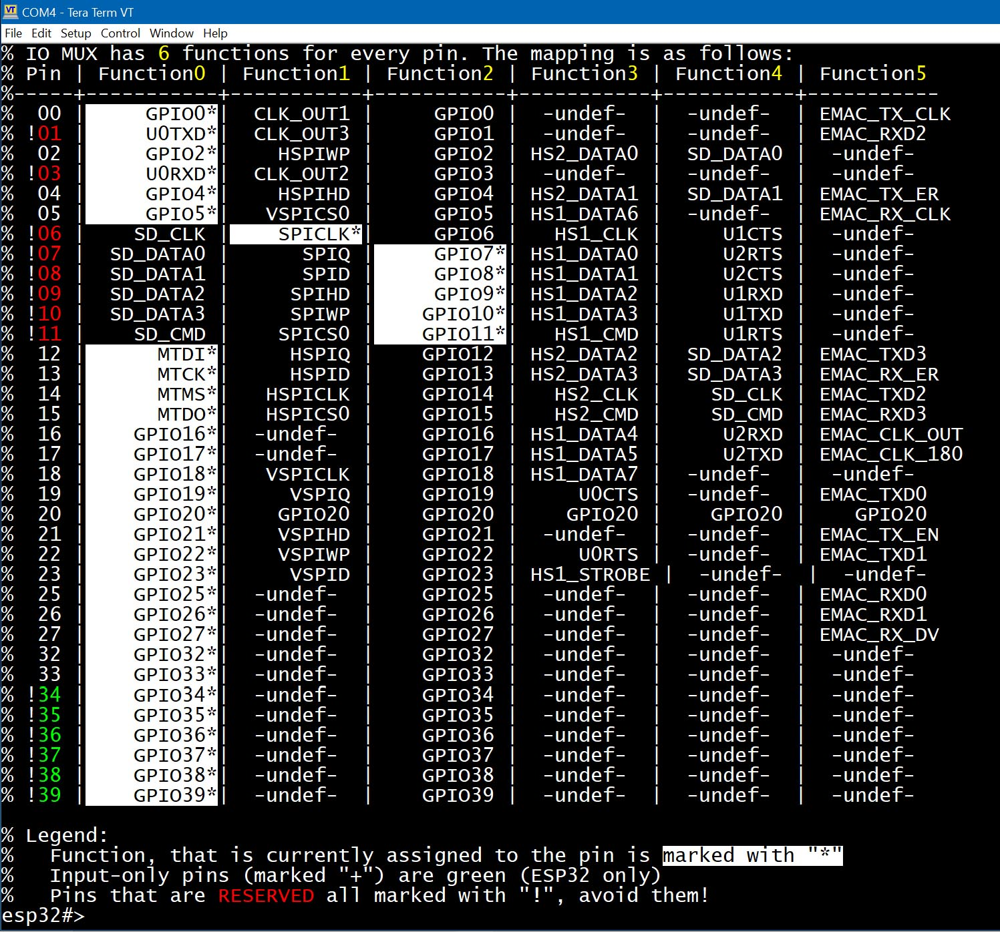
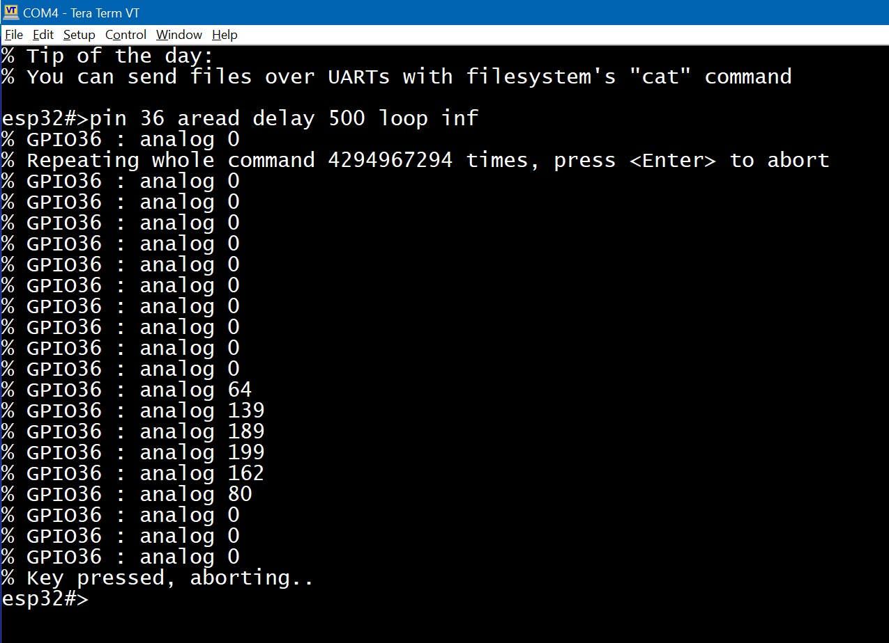

ESP32 имеет множество пинов (или GPIO — оба термина используются в этой документации взаимозаменяемо), которые можно настроить как универсальные входы/выходы (GPIO) или назначить им специальные функции. Например, пин может выступать в роли линии TX для аппаратного UART-интерфейса или служить линией CLOCK для шины I2C.
Некоторые пины имеют системные роли и называются "бутстрап-пинами". Эти пины сообщают загрузчику, как инициализировать аппаратное обеспечение при запуске. Их можно использовать, если это не мешает процессу загрузки.
Некоторые пины зарезервированы для внутреннего использования. Например, пины 6–11 на большинстве плат ESP32 Dev используются для доступа к внутренней flash-памяти. Взаимодействовать с этими пинами можно только если ваша программа уже закэширована процессором, чтобы не возникало промахов кэша инструкций.
Некоторые пины работают только на вход и не могут быть переконфигурированы в режим выхода.
В ESPShell вы можете работать с GPIO с помощью команды "pin", которая используется как для отображения информации о конкретном пине, так и для его настройки. Вы можете установить пин в состояние HIGH или LOW, отправлять различные последовательности импульсов, включать или отключать ШИМ, настраивать направление и режим пина, а также работать с IO_MUX и GPIO Matrix для сложных конфигураций. Всё это можно делать вручную, без необходимости циклов правки/компиляции/загрузки/проверки.
В отличие от digitalRead(...), который не работает на пинах, используемых аппаратными интерфейсами (например, нельзя использовать digitalRead() на линиях I2C), ESPShell может читать цифровые значения на любом GPIO. Он использует низкоуровневый доступ к состояниям пинов, поэтому безопасно читать значение пина, даже если на нём активен ШИМ. Для этого используется команда "pin NUM read".
Команда "pin" принимает несколько аргументов, которые обрабатываются слева направо. Первый аргумент — номер пина, остальные — ключевые слова и/или дополнительные номера пинов для применения операций. Эти аргументы можно рассматривать как простую программу, выполняемую на указанных пинах.
Например, "pin 2 save out high load" — валидная команда с четырьмя аргументами/ключевыми словами. Она сохраняет состояние GPIO2 во внутреннем регистре, переводит пин 2 в режим OUTPUT, устанавливает его в HIGH и сразу восстанавливает исходное состояние.
Примеры валидных команд "pin":
pin 1 high 2 low
pin 2 pwm 1000 0.5 delay 250 pwm 1000 0.25 delay 250 loop infinite
Команда "pin" может работать с одним или несколькими пинами одновременно. Пример ниже показывает команду, которая устанавливает пины 2 и 4 в HIGH, а пины 18 и 19 — в LOW:
esp32#>pin 2 high 4 high 18 low 19 lowЗдесь 2, 4, 18 и 19 — номера пинов, а "low" и "high" — ключевые слова. Ключевые слова могут встречаться несколько раз и в различных комбинациях в одной команде "pin", как показано в разделе с примерами ниже.
Чтобы отобразить информацию о произвольном пине: введите "pin", затем номер пина и нажмите <Enter>.
Пример ниже показывает базовую информацию о GPIO 0, 8, 1 и 4 (ESP32 DevKit):
esp32#>pin 0 % GPIO0 is unused, strapping pin % Mode: INPUT, PULL_UP, % Output is disabled % Input is done via IO MUX, (function: GPIO0) % Maximum drive current is 20 mA % Digital pin value is HIGH (1) % esp32#>pin 8 % GPIO8 is in use % Mode: INPUT, OUTPUT, PULL_UP, % Output is done via GPIO Matrix, provides path for signal ID: 2 % Input is done via GPIO Matrix, connected signal IDs: 2, % Maximum drive current is 20 mA % Digital pin value is LOW (0) % esp32#>pin 1 % GPIO1 is in use, configured as UART_TX % Mode: INPUT, input is floating % Output is disabled % Input is done via IO MUX, (function: U0TXD) % Maximum drive current is 20 mA % Digital pin value is HIGH (1) % esp32#>pin 4 % GPIO4 is unused % Mode: INPUT, PULL_DOWN, % Output is disabled % Input is done via IO MUX, (function: GPIO4) % Maximum drive current is 20 mA % Digital pin value is LOW (0) % esp32#>
Связанная команда "show pin NUM" эквивалентна "pin NUM" — обе отображают информацию о пине с номером NUM. Единственное отличие в том, что "show pin" принимает несколько аргументов (номеров пинов), поэтому пример выше можно записать одной командой: "show pin 0 8 1 4".
Обратите внимание, что некоторые пины зарезервированы: они используются внутри SoC. Это могут быть пины для доступа к flash-памяти или управления внешней PSRAM. Такие пины будут помечены как "is reserved".
Сколько пинов доступно на вашей плате ESP32? Чтобы узнать, какие пины существуют, а какие нет, можно использовать команду "pin" без аргументов:

Рис. 1: Вывод команды "pin" (на ESP32-WROOM32D Dev Module)
Команда pin используется для установки режима пина (например, PULL_UP/PULL_DOWN, INPUT/OUTPUT, OPEN_DRAIN) и его значения; эквивалент pinMode() и/или digitalRead()/digitalWrite()/analogRead().
| Ключевое слово | Описание и примеры |
NUMBER | pin PIN_NUMBER
esp32#>pin 0 low 1 low 2 low
Команда, содержащая только числа в качестве аргументов (например, "pin 1 2 3"), является валидной, но ничего не делает. |
out | pin PIN_NUMBER out |
in | pin PIN_NUMBER in |
up | pin PIN_NUMBER up |
down | pin PIN_NUMBER down |
open | pin PIN_NUMBER open |
Обратите внимание, что режим пина не добавляется к текущей конфигурации — он перезаписывается.
Например, если мы установим пин 2 в OUTPUT с PULL_UP командой "pin 2 out up",
а затем попытаемся добавить флаг INPUT с помощью "pin 2 in", пин 2 останется только с флагом INPUT.
Правильный способ применить несколько флагов — указать их все сразу, например: "pin 2 in out up".
Если команда pin включает любое из упомянутых выше ключевых слов режима, текущий режим пина сначала сбрасывается, а затем применяется новый.
| Ключевое слово | Описание и примеры |
| read |
pin PIN_NUMBER read Выполняет цифровое чтение. Команда "
Пины, настроенные только на OUTPUT, будут временно переключены в INPUT/OUTPUT автоматически.
В отличие от стандартного
Пример: чтение значений GPIO#1.
esp32#>pin 1 read
% GPIO1 : logic 1
esp32#>pin 1 read
% GPIO1 : logic 0
esp32#>
В примере выше пин 1 сначала возвращает "1", а затем "0".
Это происходит потому, что на ESP32 GPIO1 обычно используется как UART_TX.
|
aread |
pin PIN_NUMBER aread Выполняет аналоговое чтение. Эта команда настраивает однократное измерение АЦП (Аналого-Цифрового Преобразователя) на указанном пине и возвращает абсолютное значение АЦП. В зависимости от настройки ослабления АЦП значения могут быть от 0 до 4095. |
low |
pin PIN_NUMBER low Устанавливает логический "0" на пине. |
high |
pin PIN_NUMBER high Устанавливает логическую "1" на пине (т.е.
Оба ключевых слова
"pin 2 high"
"pin 2 out high"
|
Команда "pin" может использоваться для генерации ШИМ-сигналов, точных высокочастотных импульсных последовательностей (с модуляцией или без, подходящих для ИК-приёмников), а также для сверхнизкочастотных сигналов и пользовательских шаблонов.
| Ключевое слово | Описание и примеры |
| sequence NUM |
pin PIN_NUMBER sequence SEQUENCE_ID Передаёт предварительно заданный шаблон сигнала. Шаблоны создаются с помощью команды sequence и идентифицируются по ID номеру.
Example: Send sequence 5 over pin 2:
esp32#>pin 2 seq 5
|
| pwm FREQ DUTY |
pin PIN_NUMBER pwm FREQUENCY DUTY
Включает ШИМ-выход на указанном выводе.
Example: Enable PWM at 5kHz with 50% duty cycle on pin 2:
esp32#>pin 2 pwm 5000 0.5
Примечание: хотя команда pwm делает то же самое, что и " |
| delay NUM |
pin PIN_NUMBER delay MILLISECONDS Вставляет задержку в NUM миллисекунд перед выполнением следующего ключевого слова в последовательности команды "pin". Это может использоваться для создания простых временных шаблонов:
Example: Blink an LED connected to pin 2 at 0.5Hz:
esp32#>pin 2 high delay 1000 low delay 1000 loop infinite &
Пример выше устанавливает на выводе 2 уровень HIGH на 1 секунду, затем LOW на 1 секунду, и повторяет цикл. Символ "&" запускает команду в фоновом режиме. |
Можно временно сохранить состояние вывода (т.е. режим, значение и функцию IOMUX), а затем восстановить его. Для хранения используется внутренняя стековая структура, но она поддерживает только один уровень — то есть новая операция save перезапишет предыдущую. Ключевые слова "save" и "load" используются для сохранения и восстановления состояния вывода. Также можно зафиксировать (заморозить) выходное значение вывода, чтобы предотвратить любые изменения. Однако как только заморозка будет снята, все изменения, сделанные во время фиксации, будут применены немедленно, как будто они были отложены. Для этого используются ключевые слова "hold" и "release".
| Ключевое слово | Описание и примеры |
| hold release |
pin PIN_NUMBER hold | release Замораживает выходное значение вывода. Замороженный вывод сохраняет своё значение даже после программной перезагрузки, если питание продолжает подаваться на чип. Однако полная перезагрузка с отключением питания (POWERUP) снимает заморозку.
Example: Freeze the value of pin 2:
esp32#>pin 2 hold
"pin X release" снимает заморозку с вывода, ранее зафиксированного с помощью "pin X hold", и применяет все изменения, сделанные в период заморозки.
Example: Unfreeze pin 2:
esp32#>pin 2 release
|
| save load |
pin PIN_NUMBER save | load Сохраняет состояние вывода во внутренний регистр и восстанавливает его позже с помощью "load".
Example: Save pin state, perform analog read, then restore pin state:
esp32#>pin 2 save aread load
"pin X load" восстанавливает ранее сохранённое состояние вывода. Пример выше демонстрирует использование ключевого слова "load". |
Команду "pin" можно зациклить для повторения до тех пор, пока количество повторений не станет равным нулю. Для этого используется ключевое слово loop, которое должно быть размещено в конце команды. Цикличные команды можно прервать, нажав клавишу (для команд, работающих в переднем плане), или с помощью команды "kill" для остановки команд в фоновом режиме.
| Ключевое слово | Описание и примеры |
| loop |
pin НОМЕР_ПИНА ... loop COUNT| infinite
Повторяет всю команду
esp32#>pin 2 delay 1000 loop inf & ← Фоновая команда, повторяется бесконечно
esp32#>pin 2 delay 1000 loop 10 & ← Фоновая команда, повторяется 10 раз
|
IO_MUX и GPIO_Matrix (с подчеркиванием или без) — это аппаратные блоки внутри микросхемы ESP32. Они используются для подключения выводов GPIO к периферийным аппаратным модулям внутри ESP32. Каждый пин может быть настроен на одну из пяти (или шести на некоторых моделях ESP32) функций. Пин может использоваться как обычный GPIO или выполнять специализированную функцию (например, UART TX). Команда "show iomux" отображает текущие соответствия между пинами и функциями:

Рис. 2: Вывод команды show iomux
На примере вывода выше видно, что GPIO0 назначен на функцию 0 (обычный GPIO0). Изменение его на функцию 2 не повлияет на поведение, так как обе функции соответствуют "простому GPIO" — Функция 0 маршрутизируется через IO_MUX, а функция 2 — через GPIO_Matrix.
Пины с 6 по 11, отмеченные красным на рисунке 2, используются для доступа к встроенной флеш-памяти.
IO_MUX обеспечивает немного более высокую производительность по сравнению с GPIO_Matrix. Однако GPIO_Matrix предоставляет большую гибкость, позволяя почти любую периферию подключать к почти любому пину. Использование GPIO_Matrix для сигналов флеш-памяти (вместо IO_MUX) добавляет небольшую задержку около 25 нс.
Если снова взглянуть на рисунок 2, вы заметите, что пины 1 и 3 установлены на функцию №0, которая соответствует UART0 TX и UART0 RX соответственно. Означает ли это, что только пины 1 и 3 можно использовать для настройки UART0?
Нет, не означает.
UART0 также может быть настроен через GPIO Matrix — именно это происходит, когда вы назначаете UART0 на пины, отличные от 1 и 3. Например, если мы хотим инициализировать UART0 на пинах 18 и 19, эти пины будут переведены в режим GPIO Matrix, что отображается выбором функции №2 (на ESP32; на других моделях ESP используется функция №1). После выбора режима GPIO Matrix, пины подключаются к периферийным сигналам UART0_RX и UART0_TX. Маршрутизация сигналов (т.е. подключение или отключение) может также выполняться вручную — см. ключевое слово "matrix" ниже.
Снова, рисунок 2 показывает, что если мы хотим инициализировать UART1 на его предпочтительных пинах (т.е. через IO_MUX, минуя GPIO Matrix), нужно использовать GPIO9 и GPIO10. Когда эти пины настроены на функцию №4, они становятся UART1_RX и UART1_TX. К сожалению, GPIO9 и GPIO10 уже используются для подключения к микросхеме флеш-памяти.
Что насчёт UART2? Если его инициализировать на пинах 16 и 17 с выбранной функцией №4, они становятся пинами высокоскоростного интерфейса UART. Таким образом, пины 16 и 17 являются предпочтительными для UART2. Создадим интерфейс UART2 и снова взглянем на таблицу IOMUX:
esp32#>uart 2 esp32-uart2>up 16 17 115200 esp32-uart2>show iomux

Рис. 3: Вывод команды show iomux после инициализации UART2 на предпочтительных пинах
Что произойдёт, если мы инициализируем UART2 на пинах 18 и 19? Давайте посмотрим:
esp32#>uart 2 esp32-uart2>up 18 19 115200 esp32-uart2>show iomux

Рис. 4: Вывод команды show iomux после инициализации UART2 на альтернативных пинах
На этот раз пины установлены на функцию №2, которая соответствует режиму GPIO Matrix, что приводит к немного более медленной работе UART.
Если вы выполните команду show pin 18 19, то увидите, что пины 18 и 19 подключены к периферийным сигналам UART2_RX и UART2_TX:
esp32-uart2>sh pin 18 19 % GPIO18 is available, configured as UART_RX % Mode: INPUT, input is floating % Output is disabled % Input is done via GPIO Matrix, connected signal IDs: 198, % Maximum drive current is 20 mA % Digital pin value is LOW (0) % % GPIO19 is available, configured as UART_TX % Mode: INPUT, OUTPUT, input is floating % Output is done via GPIO Matrix, provides path for signal ID: 198 % Input is done via GPIO Matrix % Maximum drive current is 20 mA % Digital pin value is HIGH (1)
Команда "pin" является интерпретатором; она не компилирует свои ключевые слова для более быстрой обработки. Вместо этого ключевые слова интерпретируются каждый раз при их выполнении, даже внутри циклов. Так насколько быстро это работает?
Вы можете провести простой эксперимент: соедините пины 2 и 4 перемычкой и выполните команду "pin 2 low high loop infinite &" и "count 4". Первая команда переключает пин 2 между высоким и низким состоянием в фоновом цикле, а вторая команда подсчитывает импульсы, поступающие на пин 4. На классическом ESP32, работающем на 240 МГц, этот эксперимент показывает частоту импульсов около 80 кГц. Однако добавление всего лишь 1-миллисекундной задержки значительно снижает скорость исполнения: команда "pin 2 low high delay 1 loop infinite &" дает сигнал частотой около 500 Гц.
Другим фактором, который может повлиять на производительность команды "pin", является длина ключевых слов. ESPShell выполняет команды немного быстрее, если аргументы сокращены. Например, "pin 2 l h loo inf &" выполнится немного быстрее, чем "pin 2 low high loop infinite &".
Еще один важный момент: команды, такие как "pin 2 low high loop inf &", можно остановить только с помощью команды "kill -9". Это потому, что такие команды не содержат задержек, а задержки — это единственные точки, где команда "kill" (без "-9") может аккуратно прервать задачу. Для аккуратного завершения вы можете либо добавить задержку в 1 мс (что, как показано выше, значительно снижает производительность), либо использовать "kill -9", чтобы принудительно завершить задачу.
Рассмотрим несколько простых примеров, демонстрирующих, как использовать команду "pin". Часто легче учиться на примерах, чем читать бесконечные таблицы и описания.
Пример 1. Отобразить информацию о GPIO4:
esp32#>pin 4
Пример 2. Установить пин 33 в режим OUTPUT и INPUT, включить PULL_UP и установить его в состояние HIGH:
esp32#>pin 33 out in up high
Пример 3. Сохранить состояние пина, установить его в режим OUTPUT и HIGH, затем восстановить исходное состояние:
esp32#>pin 33 save out high esp32#>pin 33 load
ПРИМЕЧАНИЕ: Установка пина в "low" или "high" автоматически устанавливает его в режим OUTPUT. Внутренне ключевое слово "high" расширяется в "out high". Поэтому вышеуказанную команду можно упростить до:
esp32#>pin 33 save high esp32#>pin 33 load
Пример 4. Прочитать аналоговое значение с пина 33:
esp32#>pin 33 aread
ПРИМЕЧАНИЕ: Команда "aread" использует функцию analogRead(),
которая перенастроит пин как часть процесса чтения.
После выполнения "pin 33 aread" пин будет перенастроен и может больше не отвечать на digitalRead().
Чтобы сохранить исходную конфигурацию, используйте "save" и "load":
esp32#>pin 33 read save aread load
Аргументы обрабатываются слева направо. В данном случае пин сначала читается цифрово, затем его состояние сохраняется, после чего выполняется аналоговое чтение и восстановление состояния.
Пример 5. Сохранить состояние пина, установить его в режим OUTPUT и HIGH на 250 мс, LOW на 100 мс, снова HIGH на 50 мс, затем восстановить исходную конфигурацию:
esp32#>pin 33 save high delay 250 low delay 100 high delay 50 load
ПРИМЕЧАНИЕ: Хотя простые сигнальные паттерны можно создать с использованием "delay", эта команда обычно используется для базовых задач, таких как управление реле.
Для более сложных сигналов рекомендуется использовать Генератор импульсов. Дополнительную информацию см. в docs/Pulse_Generator.txt.
ПРИМЕЧАНИЕ: Команду "pin" можно прервать во время длительных задержек (>5 секунд), нажав любую клавишу в терминале или отправив любой символ через Serial Monitor в Arduino IDE. Короткие задержки не могут быть прерваны — вам нужно дождаться их завершения.
Пример 7. Установить пин 2 в HIGH, пин 3 в LOW, подождать 1 секунду, затем инвертировать состояния пинов:
esp32#>pin 2 high 3 low delay 1000 2 low 3 high
Пример 8. Моргание светодиода на GPIO2 с задержкой 500 мс, 20 раз:
esp32#>pin 2 high delay 500 low delay 500 loop 20
ПРИМЕЧАНИЕ: Когда используется ключевое слово "loop", команда "pin" становится прерываемой: нажатие любой клавиши в терминале или Serial Monitor в Arduino IDE прервет выполнение команды.
Пример 9. Моргание светодиода на GPIO2 при яркости 30%:
Для регулировки яркости используйте PWM с частотой 5 кГц и скважностью 30%:
esp32#>pin 2 pwm 5000 0.3 delay 500 pwm 0 0 delay 500 loop infinite
Как показано в приведенных примерах, некоторые команды "pin" могут занять много времени для выполнения.
Команды с "loop" или большими значениями "delay" могут выполняться десятки секунд или даже минуты.
Вы можете прервать их в любой момент, нажав
Пример 10. Отправить S.O.S. в Морзе, повторяя бесконечно:
(Морзе для SOS — ...---..., команда разделена на две строки для удобства чтения.)
pin 2 h d 100 l d 100 h d 100 l d 100 h d 100 l d 300 h d 200 l d 100 h d 200
l d 100 h d 200 l d 300 h d 100 l d 100 h d 100 l d 100 h d 100 l d 500 loop inf
Пример 11. Соединить GPIO2 с GPIO4 так, чтобы установка GPIO2 в логическую 1 также устанавливала GPIO4 в логическую 1. GPIO2 управляет GPIO4, но не наоборот:
esp32#>pin 2 matrix in 208 esp32#>pin 4 matrix out 208
Номер сигнала 208 — один из немногих пользовательских сигналов, не подключенных к периферийному устройству, что делает его идеальным для соединений GPIO-to-GPIO.
Пример 12. Подключить периферийный сигнал 77 к постоянному "1", а сигнал 78 к постоянному "0":
esp32#>pin 0x38 matrix in 77 esp32#>pin 0x30 matrix in 78
Этот пример использует специальные виртуальные пины: 0x30 (постоянная 0) и 0x38 (постоянная 1). Эти пины могут использоваться как источники в маршрутизации GPIO-матрицы для фиксированных логических уровней.

Пример 13. Мониторинг аналогового сигнала на пине 36:
Используйте ключевые слова "aread", "delay" и "loop" для создания простого монитора:
esp32#>pin 36 aread delay 500 loop infinite
Эта команда работает в переднем плане и обновляет аналоговое значение каждые 500 мс.
